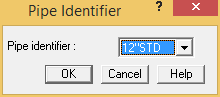
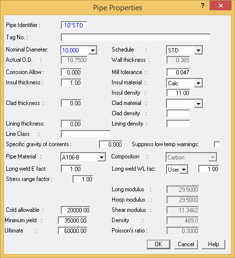

Modifying an Existing Pipe Identifier
By editing the properties associated with a Pipe ID, you can modify the attributes of all components associated with that ID. The properties of an existing pipe identifier can be modified with the Modify > Properties > Pipe Properties command. After executing this command, simply select the desired Pipe ID then modify values in the Pipe Properties dialog. The procedure is provided below.
-
.jpg) Select Modify >
Properties > Pipe Properties. The Pipe
Identifier dialog is displayed.
Select Modify >
Properties > Pipe Properties. The Pipe
Identifier dialog is displayed.

- From the Pipe Identifier field, select 12"STD {300STD}, then press OK.
- The Pipe Properties dialog is displayed. Input a new Pipe Identifier name of 10"STD {250STD}. By typing in a new name, the properties of 10"STD {250STD} will be used in all locations where the 12"STD {300STD} pipe identifier was previously defined.

- From the Nominal Diameter field, select a new pipe size of 10.000 {250}. Press OK to retain the remaining properties.
| Hint: |
Users do not necessarily have to change the name of a pipe identifier in order to change the properties, but it is often helpful to do so in order to remember pipe properties of a given identifier. |